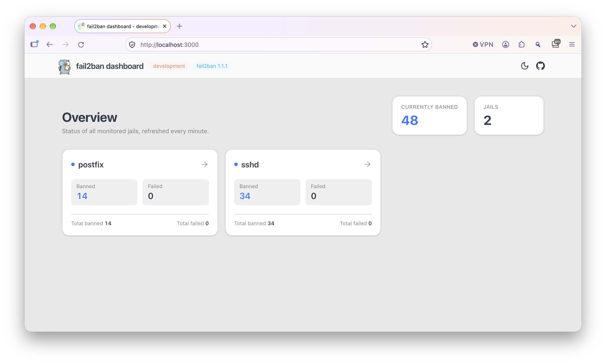
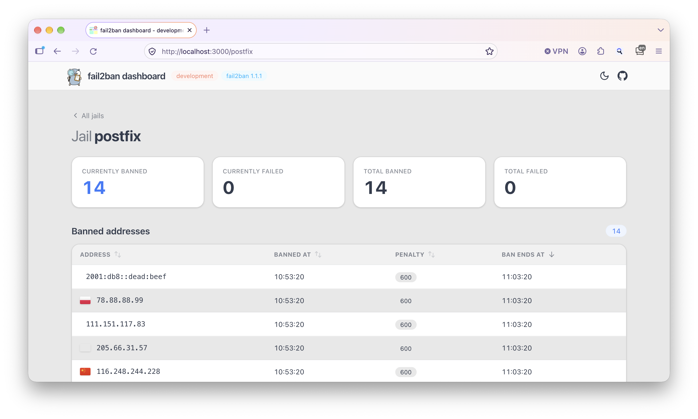
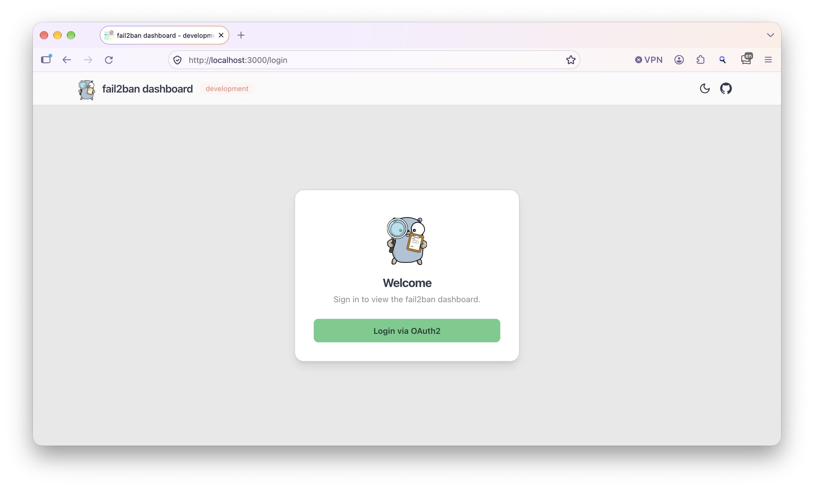

Live jail overview
Every jail with current and total banned and failed counts, read live from fail2ban and refreshed automatically.
Open source · Apache-2.0 · Use at own risk
A lightweight web dashboard for fail2ban that asks fail2ban itself, straight
through its control socket, instead of parsing log files. You get your jails and banned
addresses at a glance, plus Prometheus metrics if you want them. One binary, no database, no fuss.
fail2ban-dashboard connects to the same Unix socket that fail2ban-client uses and asks the fail2ban server directly.
fail2ban.sock
Unix socket · read-only
fail2ban-clientfail2ban-client binary are neededEverything you need to keep an eye on fail2ban, nothing you don't.
Every jail with current and total banned and failed counts, read live from fail2ban and refreshed automatically.
See where banned addresses come from. GeoIP data is downloaded and cached locally.
Optional /metrics endpoint with per-jail gauges, ready for Grafana.
Protect the dashboard with basic auth or log in through any OAuth2 / OIDC provider.
Static Go binary for amd64 and arm64, or a distroless container image on GHCR.
A clean interface that follows your system theme, behind a reverse proxy or not.


The quickest way to run the dashboard. The fail2ban socket is mounted read-only into the container:
docker run --user=root \
-v /var/run/fail2ban/fail2ban.sock:/var/run/fail2ban/fail2ban.sock:ro \
-p 3000:3000 \
ghcr.io/webishdev/fail2ban-dashboard:latestThe root user is necessary because the fail2ban socket is only accessible to root by default. Instead of latest you can pin a version such as v0.11.2.
Download a release for your platform from the releases page, then run:
sudo ./fail2ban-dashboardOpen http://127.0.0.1:3000/ in your browser.
Tested with these fail2ban versions:
For any other version, start with --skip-version-check, otherwise the application refuses to start.
But there is no guarantee, that an unsupported version will work.
Usage:
fail2ban-dashboard [flags]
fail2ban-dashboard [command]
Available Commands:
completion Generate the autocompletion script for the specified shell
help Help about any command
serve Start the fail2ban dashboard server (default)
version Print the version number and git hashEvery option can be set as a command line flag, an environment variable or a config file entry.
| Flag | Environment variable | Description | Default |
|---|---|---|---|
-a, --address | F2BD_ADDRESS | Address to serve the dashboard on | 127.0.0.1:3000 |
--base-path | F2BD_BASE_PATH | Base path of the application | / |
-c, --cache-dir | F2BD_CACHE_DIR | Directory to cache GeoIP data | working directory |
--log-level | F2BD_LOG_LEVEL | trace, debug, info, warn, error | info |
-m, --metrics | F2BD_METRICS | Enable the Prometheus metrics endpoint | false |
--metrics-address | F2BD_METRICS_ADDRESS | Address to serve metrics on | 127.0.0.1:9100 |
--refresh-seconds | F2BD_REFRESH_SECONDS | fail2ban data refresh interval (10–600) | 30 |
--scheduled-geoip-download | F2BD_SCHEDULED_GEOIP_DOWNLOAD | Keep the GeoIP cache updated even when the dashboard is not accessed | true |
--skip-version-check | F2BD_SKIP_VERSION_CHECK | Skip the fail2ban version check | false |
-s, --socket | F2BD_SOCKET | Path of the fail2ban socket | /var/run/fail2ban/fail2ban.sock |
--trust-proxy-headers | F2BD_TRUST_PROXY_HEADERS | Trust proxy headers like X-Forwarded-For | false |
Enable basic auth with --auth-user and/or --auth-password.
--auth-user given: a password is generated and printed to the logs.--auth-password given: the user is named admin.| Flag | Environment variable | Description |
|---|---|---|
--auth-user | F2BD_AUTH_USER | Username for basic auth |
--auth-password | F2BD_AUTH_PASSWORD | Password for basic auth |
Log in through any OAuth2 / OpenID Connect provider such as Keycloak. All options without a default are required.
| Flag | Environment variable | Description | Default |
|---|---|---|---|
--oauth2-client-id | F2BD_OAUTH2_CLIENT_ID | Client identifier | – |
--oauth2-auth-url | F2BD_OAUTH2_AUTH_URL | Authorization URL | – |
--oauth2-token-url | F2BD_OAUTH2_TOKEN_URL | Token URL | – |
--oauth2-redirect-url | F2BD_OAUTH2_REDIRECT_URL | Public URL of the dashboard | – |
--oauth2-timeout-minutes | F2BD_OAUTH2_TIMEOUT_MINUTES | Session timeout in minutes | 30 |
The redirect URL is the address users reach the dashboard on: usually http://127.0.0.1:3000, or e.g. https://fail2ban.example.com behind a reverse proxy.
Example with a local Keycloak at http://localhost:8080 and a demo realm:
./fail2ban-dashboard serve \
--oauth2-client-id mysecretclient \
--oauth2-auth-url http://localhost:8080/realms/demo/protocol/openid-connect/auth \
--oauth2-token-url http://localhost:8080/realms/demo/protocol/openid-connect/token \
--oauth2-redirect-url http://localhost:3000
Any format supported by viper works (TOML, YAML, JSON, …). The file is looked up in:
~/.config/fail2ban-dashboard//etc/fail2ban-dashboard/Keys match the flag names. For example /etc/fail2ban-dashboard/config.toml:
address = "127.0.0.1:4000"
socket = "/var/run/fail2ban/fail2ban.sock"
log-level = "info"
metrics = trueStart with -m and metrics are served at http://127.0.0.1:9100/metrics. Change the address with --metrics-address.
| Metric | Labels | Description |
|---|---|---|
f2b_banned_total | – | Total number of banned addresses |
f2b_jail_count | – | Number of jails |
f2b_jail_banned_current | jail | Currently banned IPs per jail |
f2b_jail_banned_total | jail | Total banned IPs per jail |
f2b_jail_failed_current | jail | Currently failed IPs per jail |
f2b_jail_failed_total | jail | Total failed IPs per jail |
fail2ban_dashboard_info | version, fail2ban_version | Build information |
# HELP f2b_jail_banned_current Amount of banned IPs currently in jail
# TYPE f2b_jail_banned_current gauge
f2b_jail_banned_current{jail="postfix"} 13
f2b_jail_banned_current{jail="sshd"} 33Requires the Go version from go.mod and make.
make build-all # Linux amd64 + arm64
make build-intel VERSION=v1.0.0 # Linux amd64 with version
make build GOOS=darwin GOARCH=arm64 # any GOOS/GOARCH
make help # list all targets